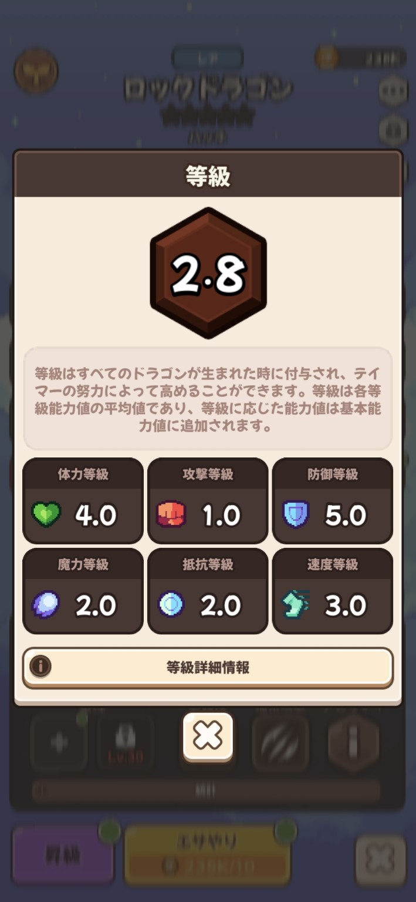
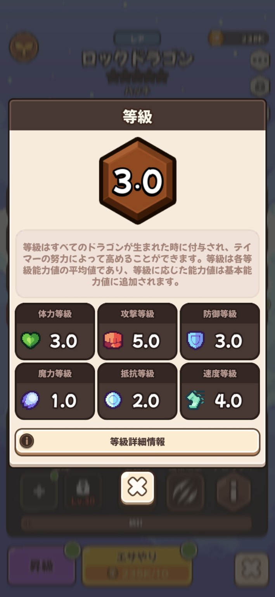
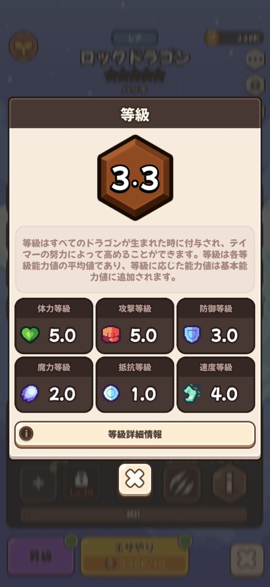

実測を優先
ゲーム画面で確認できた数値を、推測と分けて掲載します。
ABOUT PROJECT D
プレイヤーが確認した実測値を蓄積し、ドラゴンビレッジ3の育成と戦力評価を検証する非公式プロジェクトです。
ゲーム画面で確認できた数値を、推測と分けて掲載します。
同一ドラゴンの入手難易度まで含め、現実的な完成度で評価します。
新しいデータやアップデートに応じて、評価を継続的に修正します。
RESEARCH POLICY
無課金評価では、完成時の強さだけでなく、同一ドラゴンを集める難しさも含めます。
後から変えられない本体性能。
同条件で比較した能力値。
同一個体の入手性と重ねやすさ。
星・等級上昇後の期待値。
F2P TIER LIST
情報量が少ないため暫定評価。確定情報と仮説を区別して掲載します。
★5まで育成済みの実例があり、無課金でも完成形を目指しやすい。攻撃1186、速度1001。「名射手」でスキル命中率1.3倍。
基礎値が高く、「無欠」で被ダメージ後の状態異常・状態変化・能力値変化を受けない。無課金では同一個体確保が難しい。
全体的に安定した能力。「浄化」は交代時に状態異常を解除するため、状態異常環境で価値が上がる。
防御寄り。「絶対気流」は天候効果を無効化するが、現環境での天候採用率が不明。
DRAGON DATABASE
名前・レア度・役割で絞り込めます。
該当するドラゴンがありません。
GRADE ANALYSIS
総合等級は6つの個別等級の平均。総合値だけでは個体性能を判断できません。



| 総合等級 | HP | 攻撃 | 防御 | 魔法 | 抵抗 | 速度 |
|---|---|---|---|---|---|---|
| 2.8 | 367 | 541 | 373 | 357 | 357 | 310 |
| 3.0 | 361 | 561 | 361 | 357 | 353 | 316 |
| 3.3 | 373 | 561 | 361 | 357 | 357 | 316 |
TOOLS
現在分かっている範囲の参考計算です。
CHANGELOG
累計訪問者カウンター、最新更新情報、DATABASE STATUSの情報カードを追加。
スマホ表示を整理し、巨大ロゴ画像を削除。ヘッダーの小型ロゴとキャッチコピーを主役にした構成へ変更。
Project D正式ロゴ、SEOタイトル、ファビコン、Project D紹介、スマホ向けブランド表示を追加。
ダークデザイン、検索機能、図鑑カード、計算ツール、情報区分ラベルを追加。
暫定ランキング、実測ステータス、等級検証を公開準備。